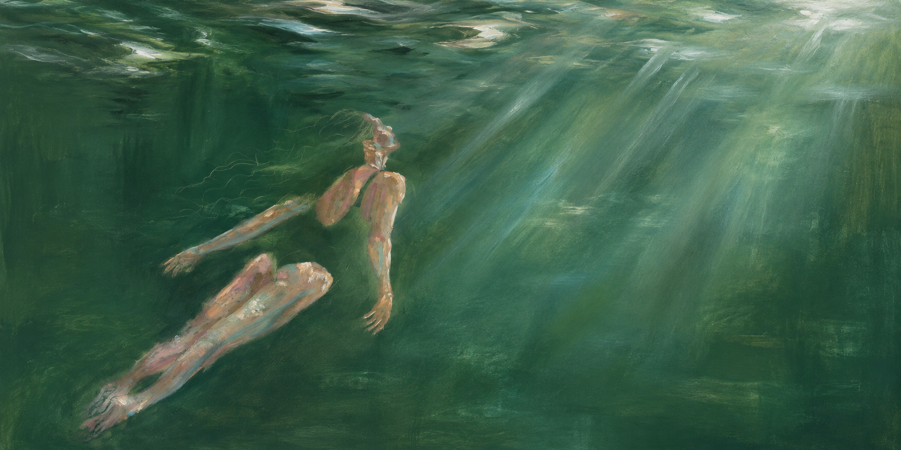
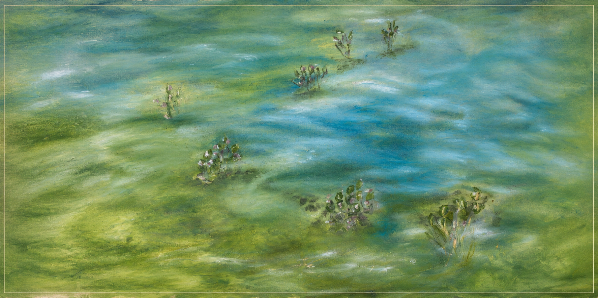
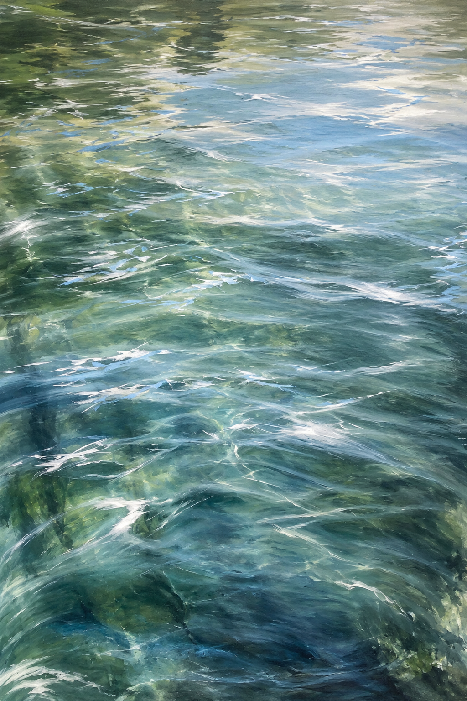
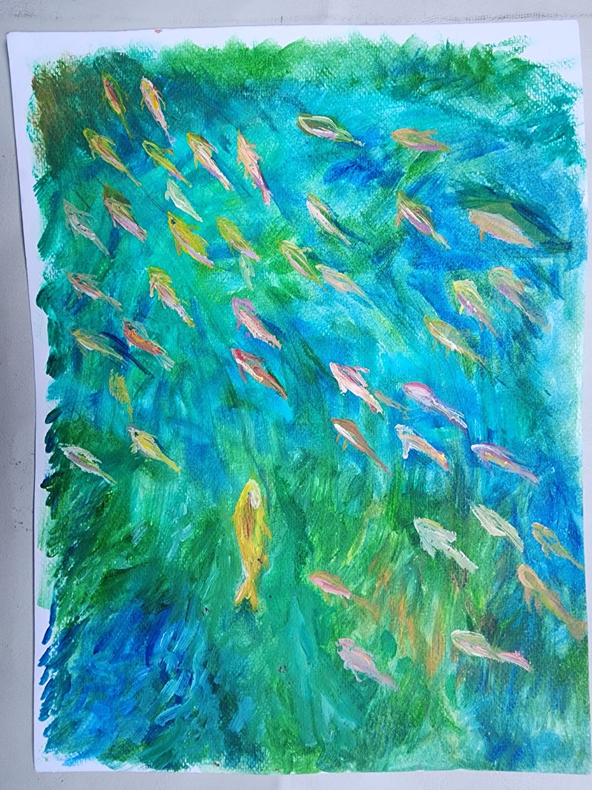
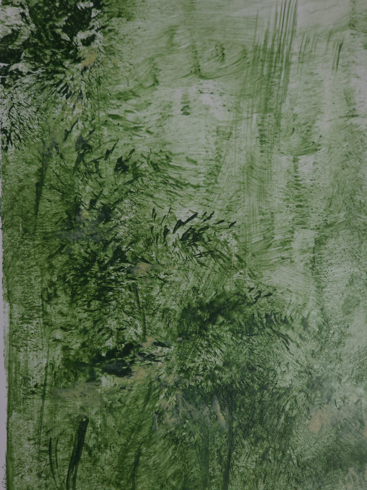
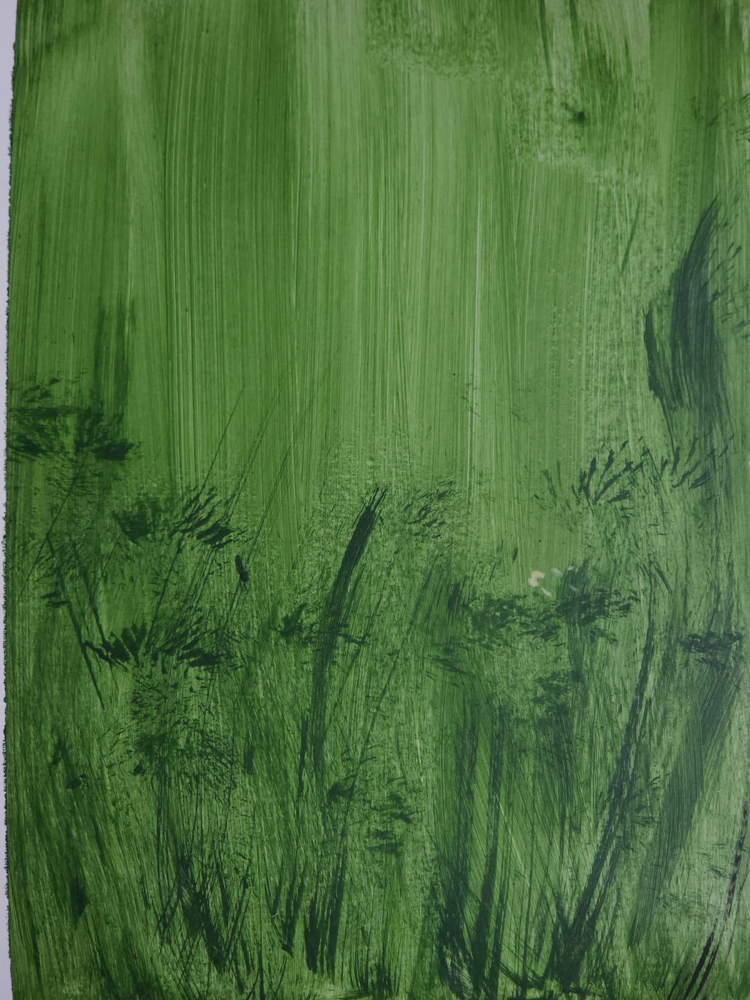
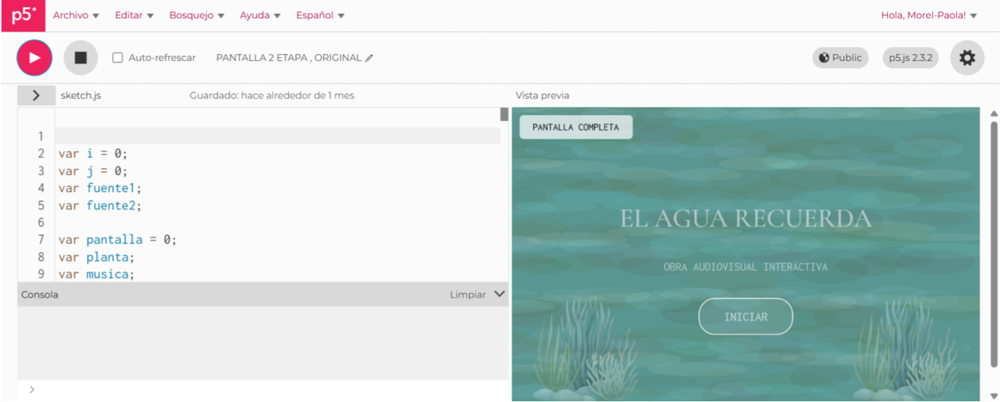

EL AGUA RECUERDA
Mi proceso creativo
Paola Morel - UNA 2026


Mi proceso creativo
Paola Morel - UNA 2026


Esta obra nace de mi proyecto de pintura "El agua que sostiene", desarrollado en la materia Proyectual II. A partir de mis recuerdos y experiencias vinculadas al agua, comencé a explorar la relación entre el cuerpo, la memoria y la sensación de flotar. El agua dejó de ser solamente un paisaje para convertirse en un espacio de recuerdos, sensaciones y emociones.
EL AGUA RECUERDA surge de mi interés por continuar trabajando con el agua, un tema que también estoy desarrollando en Proyectual II. Me interesa pensar el agua no solamente como un elemento visual, sino como un espacio relacionado con la memoria, el cuerpo, los recuerdos y la sensación de estar sostenido.
Elegí realizar una obra interactiva porque me permite trasladar esa búsqueda a otro lenguaje. En este caso, el espectador no solamente observa, sino que con sus acciones puede hacer aparecer imágenes, palabras y recuerdos. Mi intención es que este trabajo pueda dialogar también con mi proyecto de Proyectual II y ampliar la misma idea desde lo digital.
Antes de saber su nombre, ya lo había sentido.
Floto.
Y en ese flotar entiendo que hay cosas que el cuerpo sabe antes que la mente: los rayos del sol que entran y se transparentan en el agua, esa calidez que viene de arriba y te rodea. Adentro, todo pesa menos.
Pinto porque necesito traducir eso.
Elijo el óleo porque se deja moldear y esperar.
Es paciente. Te espera. No te apura.
Te deja pensar, soñar, equivocarte.
Mis paletas no son elecciones: son registros del cuerpo.
El verde que respira. La transparencia que no miente
Ese agua tiene nombre: Acuífero Guaraní.
Una reserva inmensa que existe debajo de nosotros,
en silencio, sin que casi nadie lo sepa.
No nos pide nada. Solo sostiene.
Rechazo mirar el agua como un simple paisaje decorativo.
Rechazo pensarla solo como recurso, como fondo,
como superficie tranquila.
El agua no es fondo: es cuerpo, memoria y vida.
Pido que nos detengamos a mirar lo que no se ve.
No lo que brilla, sino lo que está debajo.
Lo que nos sostiene sin que se lo agradezcamos.
Eso me obliga a pintar. Eso me obliga a no olvidar.
Defiendo una pintura que pueda hacer visible lo invisible.
Una pintura que no represente solamente el agua,
sino también su profundidad, su silencio y su fragilidad.
Quiero pintar aquello que existe aunque no lo miremos.
Quiero pintar lo que sostiene antes de que desaparezca.
Eso me obliga a pintar.
Eso me obliga a no olvidar.
El agua no necesita que la recordemos.
Nosotros sí.
Paola Morel 2026







En mis primeras pruebas con p5.js busqué representar el agua a través de los colores y las formas. Elegí trabajar principalmente con distintas tonalidades de verdes, combinadas con turquesas suaves y transparencias, para transmitir una sensación de profundidad, calma y movimiento.
Comencé utilizando formas ovaladas superpuestas, con diferentes tamaños y niveles de transparencia, intentando recrear los reflejos de la luz y el movimiento suave del agua.
Mi intención era que el agua no fuera solamente un fondo, sino que tuviera vida y movimiento propio, manteniendo la relación con mi proyecto de pintura El agua que sostiene.





El agua recuerda es una obra audiovisual interactiva que invita al espectador a explorar el agua a través del movimiento, las imágenes y las palabras.
Para comenzar la experiencia, presionar INICIAR con el mause. La obra propone interactuar con los gestos de las manos frente a la cámara de la computadora.
Si la obra no reconoce la cámara dentro de esta página, podés abrirla en una pestaña independiente.
ABRIR LA OBRA INTERACTIVAA lo largo de este proceso fui descubriendo que una misma idea puede encontrar distintas formas de expresarse. En mis pinturas busco transmitir lo que siento cuando estoy dentro del agua: la calma, la luz, el movimiento y esa sensación de que el cuerpo deja de pesar y simplemente flota.
Con esta obra interactiva quise llevar esa experiencia un poco más allá. Me pregunté qué pasaría si el espectador, en lugar de quedarse solamente mirando, pudiera intervenir y formar parte de lo que sucede.
Me interesaba que un gesto tan sencillo como abrir o cerrar una mano pudiera hacer aparecer o desaparecer palabras, como sucede con los recuerdos, que a veces parecen estar presentes y otras veces quedan escondidos en algún lugar de nuestra memoria.
También descubrí que no todo necesita ser controlado. Las ondas del agua aparecen y se transforman por sí mismas, como si el agua tuviera su propio tiempo, independientemente de nuestra presencia.
Creo que ahí aparece algo importante de esta experiencia: el espectador participa, pero no controla todo lo que sucede. Hay algo que puede descubrir con sus manos y algo que simplemente tiene que dejar ocurrir.
Al pensar esta obra junto a mis pinturas, entiendo que no son trabajos separados. Son distintas maneras de acercarme a una misma sensación. En la pintura intento hacer visible aquello que siento; en lo digital, busco que otra persona pueda experimentarlo desde su propio cuerpo.
Quizás eso sea lo que más me interesa de este trabajo: que el espectador deje de ser solamente alguien que mira y se convierta, por un momento, en parte de la obra.
Porque al final no se trata solamente de representar el agua, sino de encontrar una manera de sentirla, recordarla y reconocer todo aquello que nos sostiene, aunque muchas veces no podamos verlo.
Mi intención es que "El agua recuerda" no quede limitada a la pantalla de una computadora, sino que pueda trasladarse a un espacio expositivo mediante una proyección de gran formato.
Imagino al espectador frente a una pared donde el agua se encuentra en movimiento, rodeándolo visualmente con sus colores, transparencias y palabras. A través de una cámara que reconoce los movimientos de las manos, cada persona podría interactuar con la obra sin necesidad de tocar una pantalla.
Me interesa que ese encuentro sea corporal y sensible. Que abrir o cerrar una mano se convierta en una forma de hacer aparecer o desaparecer un recuerdo, mientras el agua continúa moviéndose con su propio ritmo.
De esta manera, la obra digital podría dialogar con mis pinturas de "El agua que sostiene", ampliando la experiencia de contemplación hacia una participación activa del espectador.
La intención es que el agua deje de ser solamente una imagen para mirar y se transforme en un espacio para experimentar.
Este boceto propone una sala expositiva más amplia, de forma rectangular, donde mis pinturas de "El agua que sostiene" conviven con la obra interactiva "El agua recuerda". La intención es que ambas partes dialoguen entre sí: por un lado, la contemplación de las pinturas; por otro, la participación del espectador a través de la proyección interactiva.

Boceto de distribución de la sala: pinturas, proyección interactiva y manifiesto.
Gracias por ser parte de esta experiencia.
Paola Morel
UNA · 2026